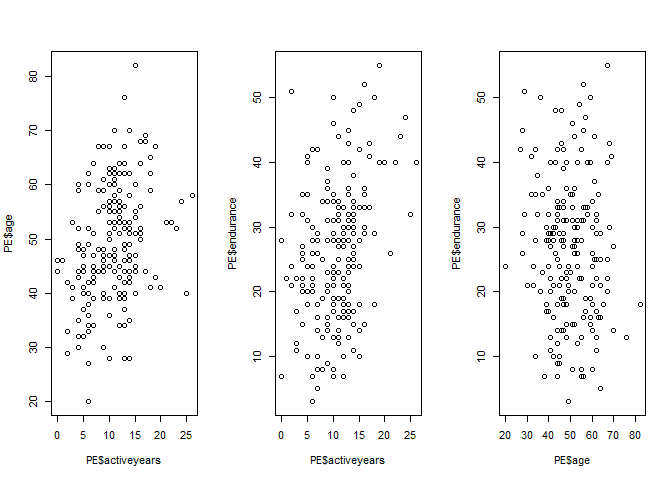
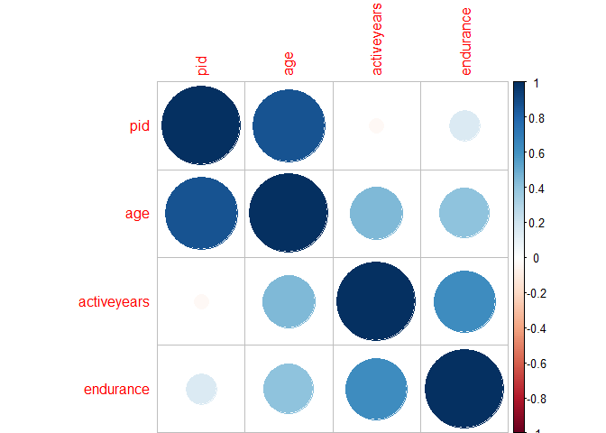
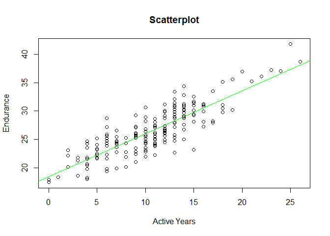
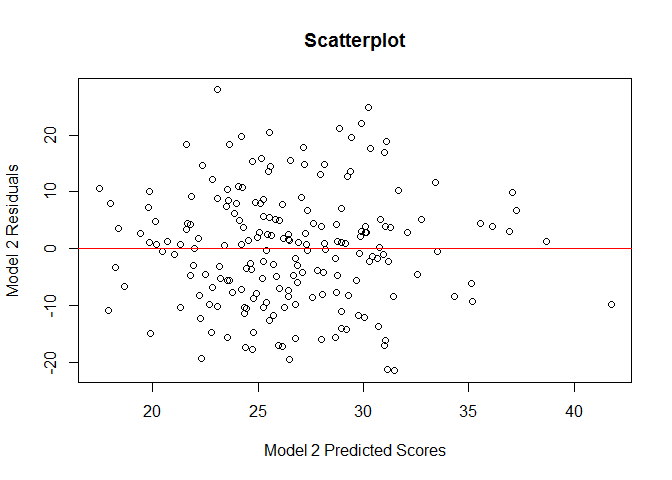

Statistics with R, Course Five, Correlation and Regression
Foreword
- Output options: the ‘tango’ syntax and the ‘readable’ theme.
- Snippets and results.
An introduction to Correlation
Manual computation of correlation coefficients - Part 1
| # Print the data set in the console
str(PE)
|
| ## 'data.frame': 200 obs. of 4 variables:
## $ pid : num 1 2 3 4 5 6 7 8 9 10 ...
## $ age : num 60 40 29 47 48 42 55 43 39 51 ...
## $ activeyears: num 10 9 2 10 9 6 8 19 9 14 ...
## $ endurance : num 18 36 51 18 23 30 8 40 28 15 ...
|
| # Take a quick peek at both vectors
A <- PE$activeyears
B <- PE$endurance
# Save the differences of each vector element with the mean in a new variable
diff_A <- A - mean(A)
diff_B <- B - mean(B)
# Do the summation of the elements of the vectors and divide by N-1 in order to acquire the covariance between the two vectors
cov <- sum(diff_A*diff_B) / (length(A) - 1)
cov
|
Manual computation of correlation coefficients - Part 2
| # Square the differences that were found in the previous step
sq_diff_A <- diff_A^2
sq_diff_B <- diff_B^2
# Take the sum of the elements, divide them by N-1 and consequently take the square root to acquire the sample standard deviations
sd_A <- sqrt(sum(sq_diff_A)/(length(A) - 1))
sd_B <- sqrt(sum(sq_diff_B)/(length(B) - 1))
sd_A
|
Manual computation of correlation coefficients - part 3
| # Combine all the pieces of the puzzle
correlation <- cov/(sd_A*sd_B)
correlation
|
| # Check the validity of your result with the cor() command
cor(A,B)
|
Creating scatterplots
| library(psych)
# Summary statistics
describe(PE)
|
| ## vars n mean sd median trimmed mad min max range skew
## pid 1 200 101.81 58.85 101.5 101.71 74.87 1 204 203 0.01
## age 2 200 49.41 10.48 48.0 49.46 10.38 20 82 62 0.06
## activeyears 3 200 10.68 4.69 11.0 10.57 4.45 0 26 26 0.30
## endurance 4 200 26.50 10.84 27.0 26.22 10.38 3 55 52 0.22
## kurtosis se
## pid -1.21 4.16
## age -0.14 0.74
## activeyears 0.46 0.33
## endurance -0.44 0.77
|
| # Scatter plots
par(mfrow = c(1, 3))
plot(PE$age ~ PE$activeyears)
plot(PE$endurance ~ PE$activeyears)
plot(PE$endurance ~ PE$age)
|

Correlation matrix
| # Correlation Analysis
round(cor(PE[2:4], use = 'pairwise.complete.obs', method = 'pearson'), 2)
|
| ## age activeyears endurance
## age 1.00 0.33 -0.08
## activeyears 0.33 1.00 0.33
## endurance -0.08 0.33 1.00
|
| # Do some correlation tests. If the null hypothesis of no correlation can be rejected on a significance level of 5%, then the relationship between variables is significantly different from zero at the 95% confidence level
cor.test(PE$age, PE$activeyears)
|
| ##
## Pearson's product-moment correlation
##
## data: PE$age and PE$activeyears
## t = 4.9022, df = 198, p-value = 1.969e-06
## alternative hypothesis: true correlation is not equal to 0
## 95 percent confidence interval:
## 0.1993491 0.4473145
## sample estimates:
## cor
## 0.3289909
|
| cor.test(PE$age, PE$endurance)
|
| ##
## Pearson's product-moment correlation
##
## data: PE$age and PE$endurance
## t = -1.1981, df = 198, p-value = 0.2323
## alternative hypothesis: true correlation is not equal to 0
## 95 percent confidence interval:
## -0.22097811 0.05454491
## sample estimates:
## cor
## -0.08483813
|
| cor.test(PE$endurance, PE$activeyears)
|
| ##
## Pearson's product-moment correlation
##
## data: PE$endurance and PE$activeyears
## t = 4.8613, df = 198, p-value = 2.37e-06
## alternative hypothesis: true correlation is not equal to 0
## 95 percent confidence interval:
## 0.1967110 0.4451154
## sample estimates:
## cor
## 0.3265402
|
CAUTION:
- The magnitude of a correlation depends upon many factors, including sampling.
- The magnitude of a correlation is also influenced by measurement of X & Y.
- The correlation coefficient is a sample statistic, just like the mean.
An introduction to Linear Regression Models
Impact experiment
| # Create a correlation matrix for the dataset (9-14 are the '2' variables only)
correlations <- cor(PE[9:14,])
# Create the scatterplot matrix for the dataset
library(corrplot)
corrplot(correlations)
|

Manual computation of a simple linear regression
1
2
3
4
5
6
7
8
9
10
11
12
13
14
15
16
17
18 | # Calculate the required means, standard deviations and correlation coefficient
mean_ay <- mean(PE$activeyears)
mean_e <- mean(PE$endurance)
sd_ay <- sd(PE$activeyears)
sd_e <- sd(PE$endurance)
r <- cor(PE$activeyears, PE$endurance)
# Calculate the slope
B_1 <- r * (sd_e)/(sd_ay)
# Calculate the intercept
B_0 <- mean_e - B_1 * mean_ay
# Plot of ic2 against sym2
plot(PE$activeyear, PE$endurance, main = 'Scatterplot', ylab = 'Endurance', xlab = 'Active Years')
# Add the regression line
abline(B_0, B_1, col = 'red')
|

Executing a simple linear regression using R
| # Construct the regression model
model_1 <- lm(PE$endurance ~ PE$activeyear)
# Look at the results of the regression by using the summary function
summary(model_1)
|
1
2
3
4
5
6
7
8
9
10
11
12
13
14
15
16
17
18 | ##
## Call:
## lm(formula = PE$endurance ~ PE$activeyear)
##
## Residuals:
## Min 1Q Median 3Q Max
## -20.5006 -7.8066 0.5304 5.7649 31.0511
##
## Coefficients:
## Estimate Std. Error t value Pr(>|t|)
## (Intercept) 18.4386 1.8104 10.185 < 2e-16 ***
## PE$activeyear 0.7552 0.1553 4.861 2.37e-06 ***
## ---
## Signif. codes: 0 '***' 0.001 '**' 0.01 '*' 0.05 '.' 0.1 ' ' 1
##
## Residual standard error: 10.27 on 198 degrees of freedom
## Multiple R-squared: 0.1066, Adjusted R-squared: 0.1021
## F-statistic: 23.63 on 1 and 198 DF, p-value: 2.37e-06
|
| # Extract the predicted values
predicted <- fitted(model_1)
# Create a scatter plot of Impulse Control against Symptom Score
plot(PE$endurance ~ PE$activeyear, main = 'Scatterplot', ylab = 'Endurance', xlab = 'Active Years')
# Add a regression line
abline(model_1, col = 'red')
abline(lm(predicted ~ PE$activeyears), col = 'green', lty = 2)
|

Executing a multiple regression in R
| # Multiple Regression
model_2 <- lm(PE$endurance ~ PE$activeyear + PE$age)
# Examine the results of the regression
summary(model_2)
|
1
2
3
4
5
6
7
8
9
10
11
12
13
14
15
16
17
18
19 | ##
## Call:
## lm(formula = PE$endurance ~ PE$activeyear + PE$age)
##
## Residuals:
## Min 1Q Median 3Q Max
## -21.4598 -7.7398 0.6984 5.5364 27.9230
##
## Coefficients:
## Estimate Std. Error t value Pr(>|t|)
## (Intercept) 27.7035 3.4779 7.966 1.29e-13 ***
## PE$activeyear 0.9192 0.1610 5.708 4.16e-08 ***
## PE$age -0.2229 0.0720 -3.096 0.00225 **
## ---
## Signif. codes: 0 '***' 0.001 '**' 0.01 '*' 0.05 '.' 0.1 ' ' 1
##
## Residual standard error: 10.06 on 197 degrees of freedom
## Multiple R-squared: 0.1481, Adjusted R-squared: 0.1394
## F-statistic: 17.12 on 2 and 197 DF, p-value: 1.394e-07
|
| # Extract the predicted values
predicted <- fitted(model_2)
# Plotting predicted scores against observed scores
plot(predicted ~ PE$activeyears, main = 'Scatterplot', ylab = 'Endurance', xlab = 'Active Years')
abline(lm(predicted ~ PE$activeyears), col = 'green')
|

Linear Regression Models continued
Calculating the sum of squared residuals
1
2
3
4
5
6
7
8
9
10
11
12 | # Create a linear regression with `ic2` and `vismem2` as regressors
model_1 <- lm(PE$endurance ~ PE$activeyear + PE$age)
# Extract the predicted values
predicted_1 <- fitted(model_1)
# Calculate the squared deviation of the predicted values from the observed values
deviation_1 <- (predicted_1 - PE$endurance)^2
# Sum the squared deviations
SSR_1 <- sum(deviation_1)
SSR_1
|
Standardized linear regression
| # Create a standardized simple linear regression
model_1_z <- lm(scale(PE$endurance) ~ scale(PE$activeyear))
# Look at the output of this regression model
summary(model_1_z)
|
1
2
3
4
5
6
7
8
9
10
11
12
13
14
15
16
17
18 | ##
## Call:
## lm(formula = scale(PE$endurance) ~ scale(PE$activeyear))
##
## Residuals:
## Min 1Q Median 3Q Max
## -1.89126 -0.72019 0.04893 0.53184 2.86459
##
## Coefficients:
## Estimate Std. Error t value Pr(>|t|)
## (Intercept) 4.871e-17 6.700e-02 0.000 1
## scale(PE$activeyear) 3.265e-01 6.717e-02 4.861 2.37e-06 ***
## ---
## Signif. codes: 0 '***' 0.001 '**' 0.01 '*' 0.05 '.' 0.1 ' ' 1
##
## Residual standard error: 0.9476 on 198 degrees of freedom
## Multiple R-squared: 0.1066, Adjusted R-squared: 0.1021
## F-statistic: 23.63 on 1 and 198 DF, p-value: 2.37e-06
|
| # Extract the R-Squared value for this regression
r_square_1 <- summary(model_1_z)$r.squared
r_square_1
|
| # Calculate the correlation coefficient
corr_coef_1 <- sqrt(r_square_1)
corr_coef_1
|
| # Create a standardized multiple linear regression
model_2_z <- lm(scale(PE$endurance) ~ scale(PE$activeyear) + scale(PE$age))
# Look at the output of this regression model
summary(model_2_z)
|
1
2
3
4
5
6
7
8
9
10
11
12
13
14
15
16
17
18
19 | ##
## Call:
## lm(formula = scale(PE$endurance) ~ scale(PE$activeyear) + scale(PE$age))
##
## Residuals:
## Min 1Q Median 3Q Max
## -1.97975 -0.71403 0.06443 0.51076 2.57601
##
## Coefficients:
## Estimate Std. Error t value Pr(>|t|)
## (Intercept) 5.590e-17 6.560e-02 0.000 1.00000
## scale(PE$activeyear) 3.975e-01 6.964e-02 5.708 4.16e-08 ***
## scale(PE$age) -2.156e-01 6.964e-02 -3.096 0.00225 **
## ---
## Signif. codes: 0 '***' 0.001 '**' 0.01 '*' 0.05 '.' 0.1 ' ' 1
##
## Residual standard error: 0.9277 on 197 degrees of freedom
## Multiple R-squared: 0.1481, Adjusted R-squared: 0.1394
## F-statistic: 17.12 on 2 and 197 DF, p-value: 1.394e-07
|
| # Extract the R-Squared value for this regression
r_square_2 <- summary(model_2_z)$r.squared
r_square_2
|
| # Calculate the correlation coefficient
corr_coef_2 <- sqrt(r_square_2)
corr_coef_2
|
Assumptions of linear regression:
- Normal distribution for Y.
- Linear relationship between X and Y.
- Homoscedasticity.
- Reliability of X and Y.
- Validity of X and Y.
- Random and representative sampling.
Check it out with Anscombe’s quartet plots.
Plotting residuals
| # Extract the residuals from the model
residual <- resid(model_2)
# Draw a histogram of the residuals
hist(residual)
|

| # Extract the predicted symptom scores from the model
predicted <- fitted(model_2)
# Plot the residuals against the predicted symptom scores
plot(residual ~ predicted, main = 'Scatterplot', ylab = 'Model 2 Residuals', xlab = 'Model 2 Predicted Scores')
abline(lm(residual ~ predicted), col = 'red')
|
